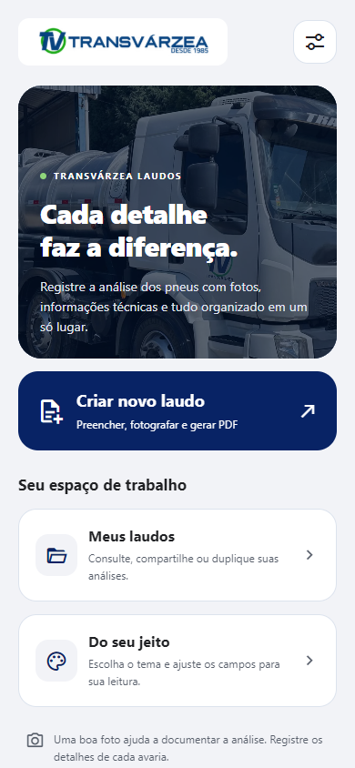

DESTAQUE · APLICATIVO MOBILE
Transvárzea Laudos
Aplicativo para organizar a criação de laudos de pneus. Formulários estruturados, consulta de registros e geração de PDFs em uma experiência pensada para o celular.
- Criação, consulta e duplicação de laudos.
- Documentos em PDF e informações organizadas.
- Temas e ajustes de fonte para uma leitura confortável.
Sobre o desenvolvimento ↗
O trabalho inclui componentes de formulário responsivos, tratamento da abertura do teclado Android e preferências visuais salvas no dispositivo. Aplicação desenvolvida para a Transvárzea.